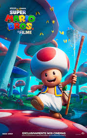

Mario é um filme baseado na série de video games, Super Mario Bros, da Nintendo. Em Super Mario Bros. - O Filme, Mario (Chris Pratt) é um encanador qualquer no bairro de Brooklyn junto com seu irmão Luigi (Charlie Day). Um dia, Mario e Luigi vão para no reino dos cogumelos, governado pela Princesa Peach (Anya Taylor-Joy), mas ameaçado pelo rei dos Koopas, Bowser (Jack Black), que vai fazer de tudo para conseguir reinar todos os lugares. É então quando Luigi é raptado por Bowser e o usa para procurar Mario, o único capaz de deter o Koopa e reestabelecer a paz. Mario terá que aprender como viver nesse novo reino perigoso, passando por vários biomas, aprender a dirigir carros, utilizar itens que o fazem soltar bolas de fogo das mãos, virar um animal e andar em plataformas nada confiáveis. Também estará acompanhados de amigos, como Toad (Keegan-Michael Key) e Donkey Kong (Seth Rogan).
As crianças de seis anos de idade e as crianças de trinta que cresceram com o nintendinho provavelmente terão reações muito parecidas assistindo Super Mario Bros. - O Filme. É praticamente impossível não passar boa parte da uma hora e meia com um pequeno sorriso no rosto, seja pelo humor genuinamente inocente da história ou pelo reconhecimento de uma infinidade de referências aos jogos que acompanharam e continuam fazendo parte do crescimento das últimas gerações. É com um espírito bem-humorado e tão acelerado quanto seus famosos karts que a dupla de encanadores mais famosa da cultura pop ganha seu longa-metragem mais interessante (até agora). Na animação lançada em 2023, os irmãos Mario e Luigi fazem parte de uma família de descendência italiana (com muito sotaque na versão dublada, ainda bem!) e levam uma vida simples e unida no bairro do Brooklyn, em Nova York. A dupla está tentando
